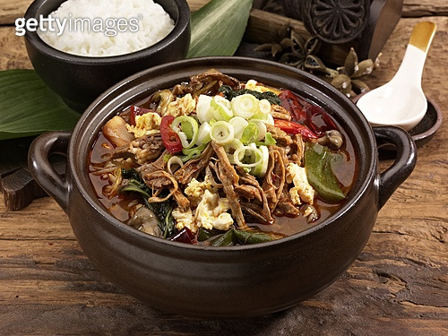

메뉴명: 육개장

메뉴 설명
: 고기와 고사리, 숙주 등을 넣고 칼칼하게 끓인 매콤한 국물 요리입니다.
칼로리: 약 200~250kcal (1인분 기준)
나트륨: 약 1,000~1,300mg
재료
소고기 200g, 고사리 100g, 숙주 100g, 고춧가루 2큰술, 다진 마늘 1작은술, 물 5컵
레시피
1. 소고기를 삶아 육수를 만듭니다.
2. 고사리와 숙주를 넣고 끓입니다.
3. 고춧가루와 다진 마늘로 간을 맞춥니다.